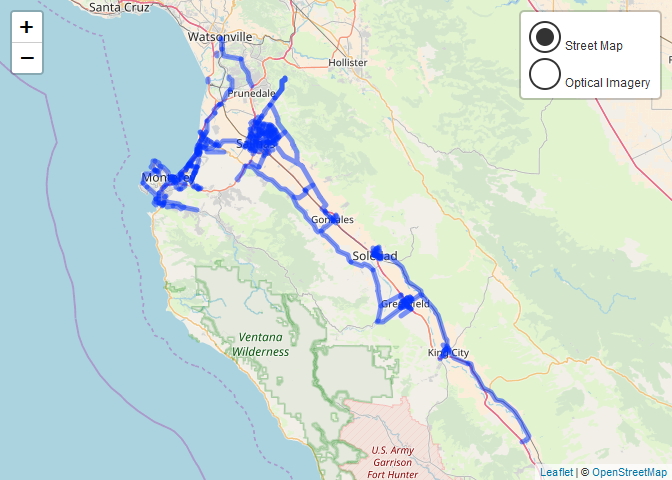

An R package for programmatic access to the Salinas Open Data Portal API.
Installation
# Install the (exceptionally early) development version from GitHub via {devtools}
if(!require(devtools)) {
install.packages("devtools")
}
devtools::install_github("knapply/salinasr")Usage
library(salinasr)
(bikeways_sf <- sal_get_metadata("bikeways") %>%
sal_get_dataset()) %>%
dplyr::select(name, juris, miles)#> Simple feature collection with 302 features and 3 fields
#> geometry type: MULTILINESTRING
#> dimension: XY
#> bbox: xmin: -121.9639 ymin: 36.01251 xmax: -120.9042 ymax: 36.90522
#> epsg (SRID): 4326
#> proj4string: +proj=longlat +datum=WGS84 +no_defs
#> # A tibble: 302 x 4
#> name juris miles geometry
#> <chr> <chr> <dbl> <MULTILINESTRING [°]>
#> 1 California A~ Marina 1.21 ((-121.7968 36.66623, -121.7967 36.66638,~
#> 2 Beach Rd Marina 0.271 ((-121.7973 36.69362, -121.7975 36.69375,~
#> 3 Thomas Owens~ Monter~ 0.0609 ((-121.8189 36.58016, -121.8187 36.58029,~
#> 4 Wilson Rd Monter~ 0.160 ((-121.8083 36.57288, -121.8087 36.57308,~
#> 5 Creekbridge Salinas 1.07 ((-121.6216 36.7015, -121.6216 36.7015, -~
#> 6 Nantucket Salinas 0.997 ((-121.6188 36.7103, -121.6184 36.71039, ~
#> 7 Hatton Canyo~ County 0.339 ((-121.9099 36.53941, -121.9096 36.53954,~
#> 8 Maryal Salinas 0.395 ((-121.6461 36.691, -121.6467 36.69187, -~
#> 9 Iris Salinas 0.0928 ((-121.6521 36.69322, -121.6533 36.69328,~
#> 10 Monterey Coa~ Caltra~ 2.95 ((-121.8875 36.60058, -121.8873 36.60057,~
#> # ... with 292 more rows
ggmap::get_map("Salinas, CA", zoom = 11) %>%
ggmap::ggmap() +
ggplot2::geom_sf(data = bikeways_sf, color = "red", inherit.aes = FALSE)